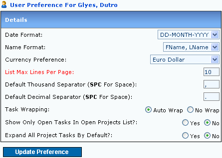
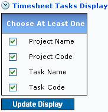
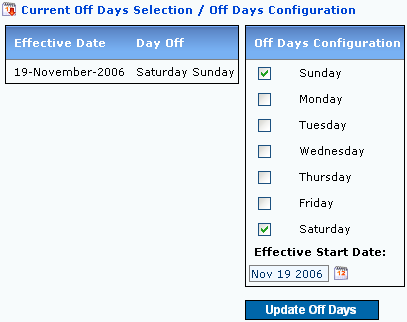
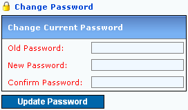

1. General Preference

Figure 1: General User Preference Page
- Date Format: Date display preference. All dates in system will follow this format
- Name Format: Name display preference. All names in system will follow this format
- Currency Preference: Default currency. Any currency selection will default to this selected currency symbol
- List Max Lines Per Page: All listings in page will have the total list as shown. Listings that exceed the number will overflow to the next page
- Default Thousand Separator (SPC For Space): Default separator for thousands
- Default Decimal Separator (SPC For Space): Default separator for decimal numbers
- Task Wrapping: Tasks will wrap automatically to a new line during Timesheet activities
- Show Only Open Tasks In Open Projects List?: Only Tasks with Open status will be shown during Project Selections
- Expand All Project Tasks By Default?: Project Treeview to expand or collapse by default
|
2. Timesheet Display Configuration

Figure 2: Timesheet Display Preference
- Project Name: Display Project Name is Timesheet Window
- Project Code: Display Project Code is Timesheet Window
- Task Name: Display Task Name is Timesheet Window
- Task Code: Display Task Code is Timesheet Window
|
3. Off Days Configuration

Figure 3: Off Days User Preference
- Off Days Configuration: Define Your Specific Off Day
- Effective Start Date: Effetive Start Date of your Off Day
|
4. Changing Your Password

Figure 4: Change Current Password
- Old Password: Your Old Password
- New Password: Your New Password
- Confirm Password: Confirm Your New Password
|